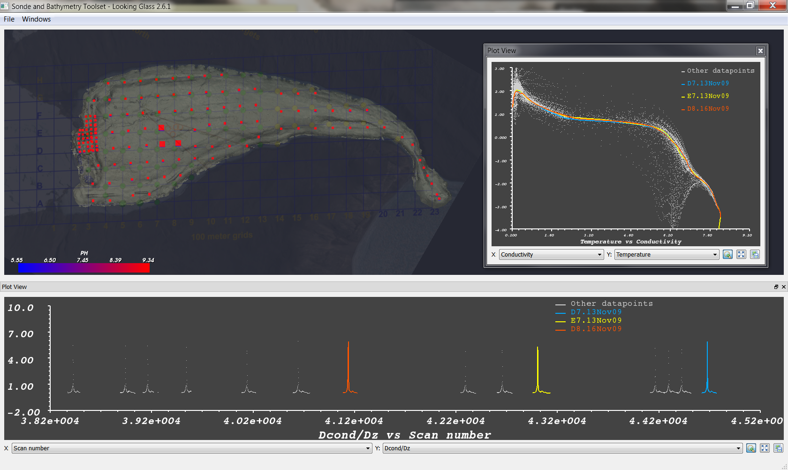
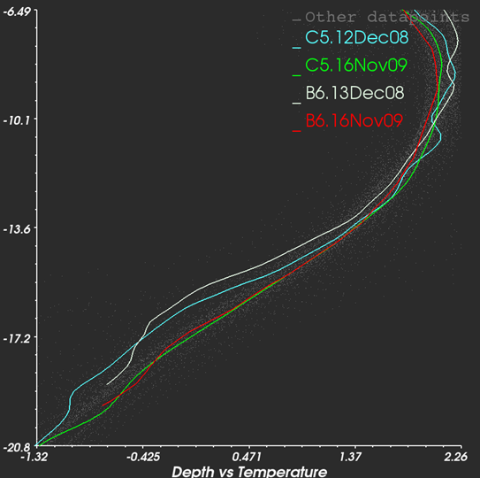
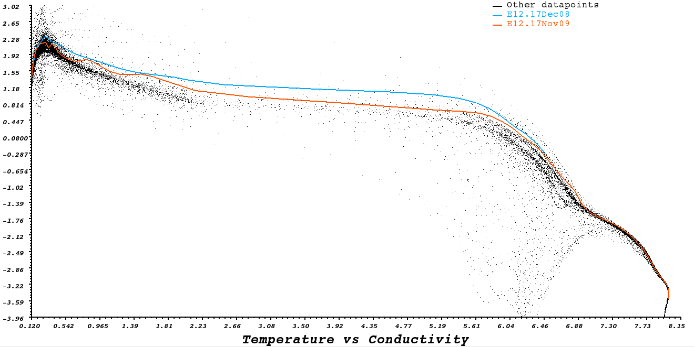

Looking Glass

Looking Glass is a visualization program developed to support researchers in the analysis of the data coming from the
ENDURANCE mission.
The application objectives are:
- Visualize data collected by the AUV sonde and allow for easily querying on the data by time, station number, dive number etc.
- Generate plots out of data selections, and compare multiple plots showing the relations between different chemical and measurement parameters
- Visualize and compare different bathymetric models of the lake: The models can come from old survey datasets, from approximated sonde measurements or from
the new deltaT data gathered by the ENDURANCE mission.
- Visualize and replay mission logs, showing the position of the AUV during a dive, the time referenced mission log and the images captured by the onboard cameras
- Visualize georeferenced datasets of images collected by the AUV cameras and save specific subsets of the image database for further processing
- Allow the user to easily customize and save visualization products, as images of plots, of the 3d visualization or as CSV files containing query results.
The following video gives a quick introduction to Looking Glass.
Inside Looking glass, the user can enable and layout different views of the data at the same time. The mission replays, 3d
models and sonde drops are all visualized in the main 3d view: it is also possible to enable up to four separate plot views and a spreadsheet
showing the actual data generated by the current query.

Data querying is performed through several user interface panels that allow the user to specify the currently visualized measurement for the
sonde drops in the main 3d view, and the mission year, dive id or date interval of the visualized data. Additional filtering can be performed
by interacting directly with the view.
for instance it is possible to:
- select a region of data on a plot to filter that portion of data in all the views.
- click on one or more sonde drops in the 3d view to select those drops and visualize them as color coded curves in the plot views.
Looking glass allows the user to configure the final look of graphic data products to a great extent.


Through the options window it is possible to choose colors for almost any 2d and 3d visualization feature
supported by the program. Plots labels, curve parameters and data sources are all customizable, and the generated
data plots can be easily saved as images using the export button on plot windows.
It is also possible to individually configure the color transfer function for each visualizable data field in the source
dataset. All the changes get saved automatically in the program user profile: when the program is run again all the user
preferences for visualization parameters and program layout are made available again.
LINKS
Looking class source on Google Code.
Release History.
Looking class binaries download page.